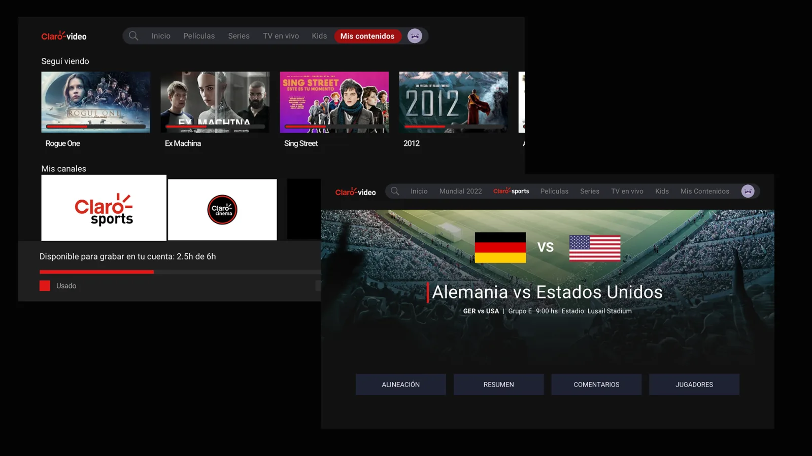
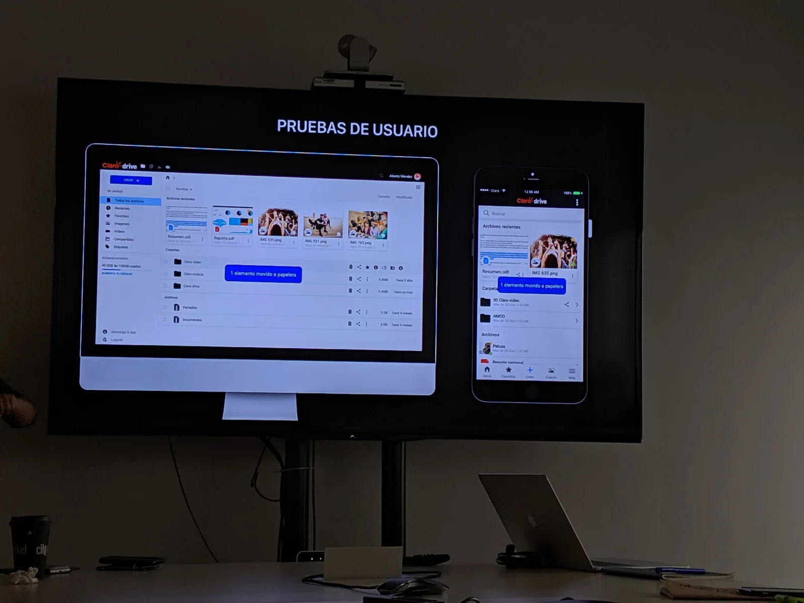
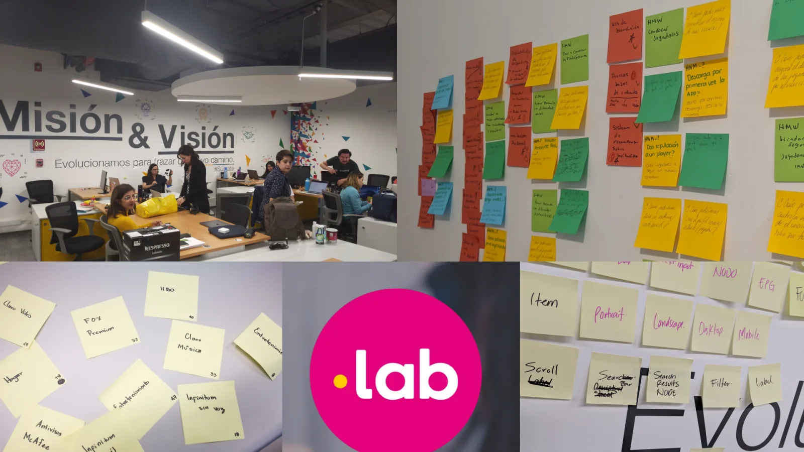
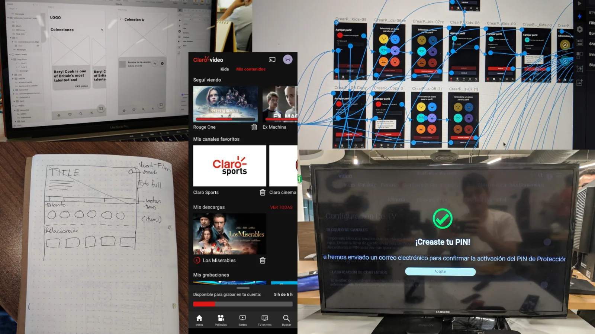
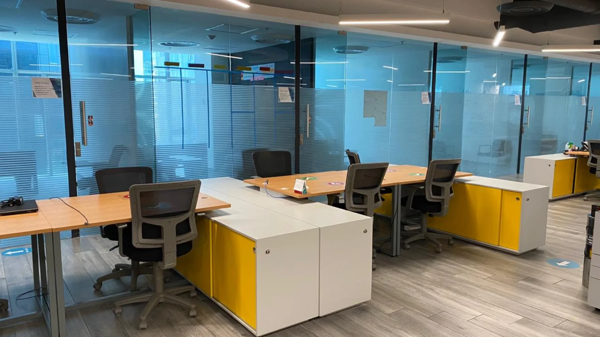
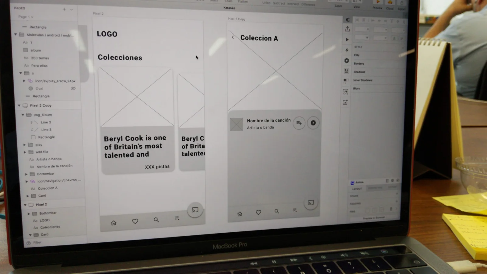

Claro Products
Three and a half years designing streaming, storage and telecom products for one of Latin America's largest carriers
Claro, one of LATAM's largest carriers, had a suite of digital products (streaming, cloud, music, payments) with teams spread across Mexico, Brazil, and Argentina.
I joined as a UX/UI designer across several products and grew into leading Claro Drive: I ran usability tests, owned the design direction, and managed a designer.
I shipped features that reached production (the editors integration in Drive and a new channel layout in Video) and went from designing screens to owning a full product.

The ecosystem
Claro is one of the largest telecommunications companies in Latin America. Their digital product suite includes streaming (Claro Video), cloud storage (Claro Drive), music (Claro Música) and mobile payments (Claro Pay). Each product serves millions of users across the region, with development teams distributed across Mexico, Brazil and Argentina.
My role
I joined as a UX/UI designer working across multiple products. Over three and a half years I grew from supporting individual features to leading an entire product: Claro Drive, where I managed one direct report and owned the design direction.
My involvement across the ecosystem gave me a perspective few designers on the team had: I understood how the products connected and where the experience gaps were. That perspective earned me an invitation to the proposals team, where we explored new versions and solutions for the platforms.
Leading the product
Claro Drive was where my role evolved from designer to product lead. I was responsible for the design direction, ran usability tests (both internally and with the agency PuntoLab), and managed one designer on the team.
The editors challenge
The most significant project was integrating document editors (Word, Excel and PowerPoint) directly into the platform. Users needed to edit files without downloading them, switching to another app and re-uploading. It was a business-critical feature: without it, Claro Drive couldn't compete with established cloud storage solutions. I designed the integration experience, ensuring the editors felt native to the platform rather than bolted on.

Usability testing
I ran tests directly and collaborated with PuntoLab on more structured sessions. This is where I built the foundation of my research practice: learning to run sessions, translate findings into actionable design changes, and communicate results to stakeholders and developers.

Designing for every screen
Claro Video was a multi-platform streaming product serving users across TV, TV boxes, tablets, smartphones and web. I worked alongside the product lead, and the entire design team worked across all platforms, following each platform's design guidelines and interaction patterns.
The key challenge was maintaining a consistent experience across five very different screen sizes and input methods, from remote controls on TV to touch on mobile, while respecting each platform's native conventions.

The proposals team
My work and perspective on the product earned me an invitation to join the proposals team. This was a small group that explored new directions for the platforms. One proposal that shipped: a new layout to differentiate live TV channels from the rest of the content library, plus adjustments to the channel grid. Seeing a concept go from exploration to production reinforced something I still believe: the best design work comes from people who understand the product deeply enough to spot opportunities others don't.

I also contributed to the design of Claro Música within the product team; it was my first contact with a content-oriented platform.

Early in its development, I conducted a heuristic evaluation of the Claro Pay mobile platform using the Sirius usability model. The app scored 60.62%, revealing significant friction points. I delivered annotated observations with improvement recommendations and proposed a revised information architecture based on a tree test. This was a fast, evidence-based intervention: the timeline was tight, so I chose a method that could deliver actionable results without a full research cycle.
Three and a half years at Claro shaped the designer I am today. The tangible outputs: editor integration shipped in Claro Drive, a new channel layout shipped in Claro Video, and a usability evaluation that informed Claro Pay's development. But the real growth was in what I learned to do:
Lead a product
Claro Drive gave me my first experience owning design direction, managing someone, and being accountable for a product's UX, not just individual screens.
Design across platforms
Five device types on Claro Video taught me that good design isn't one solution scaled up and down. It's the same intent expressed differently for each context.
Work across cultures
Collaborating with teams in Brazil and Argentina taught me to communicate design decisions across languages and working styles.
Test with real users
Running and attending usability sessions, both independently and with PuntoLab, built the research muscle I've relied on ever since.
Claro was my training ground. I arrived knowing how to design interfaces and left knowing how to lead a product. If I could go back, I'd push harder for metrics: I have the work but not the numbers, and that's a gap I've learned to close in every project since. What I do have is the instinct that Claro built: when you understand a product deeply enough, you stop waiting for someone to ask you to improve it. You just see what needs to happen next.